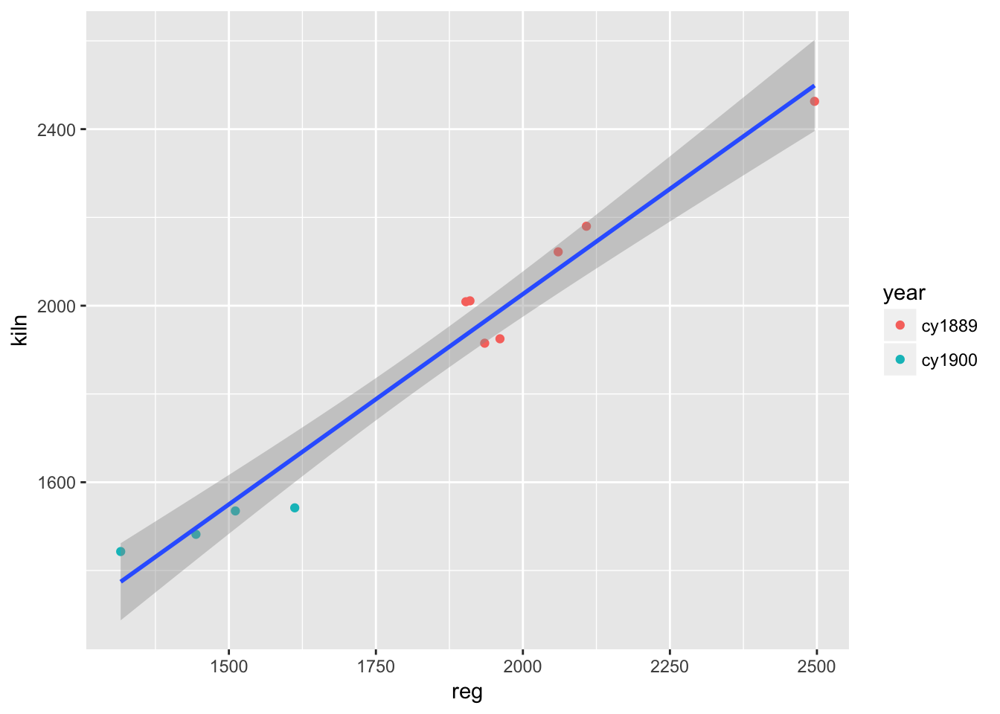
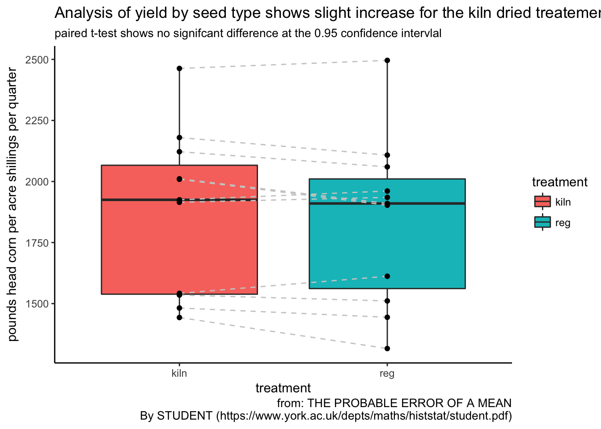
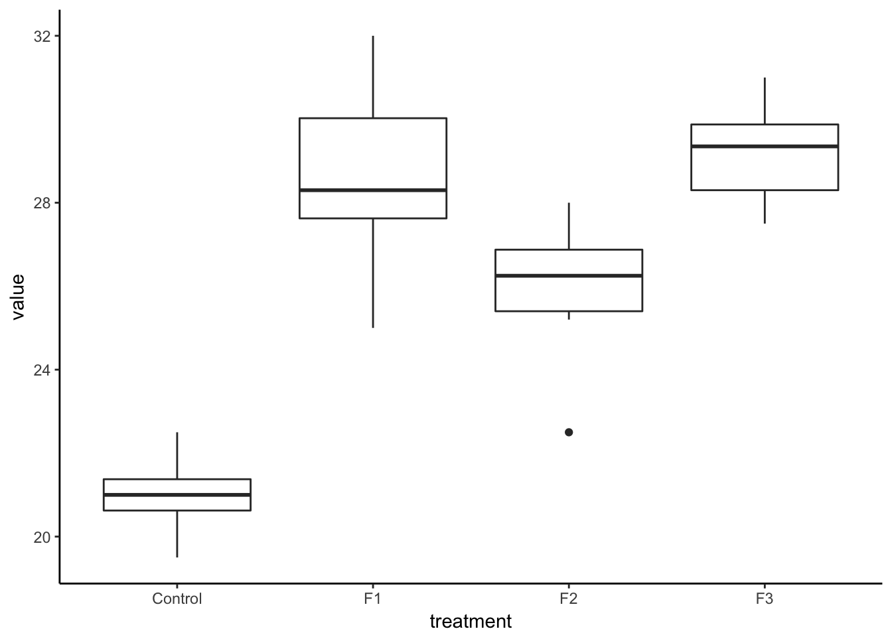
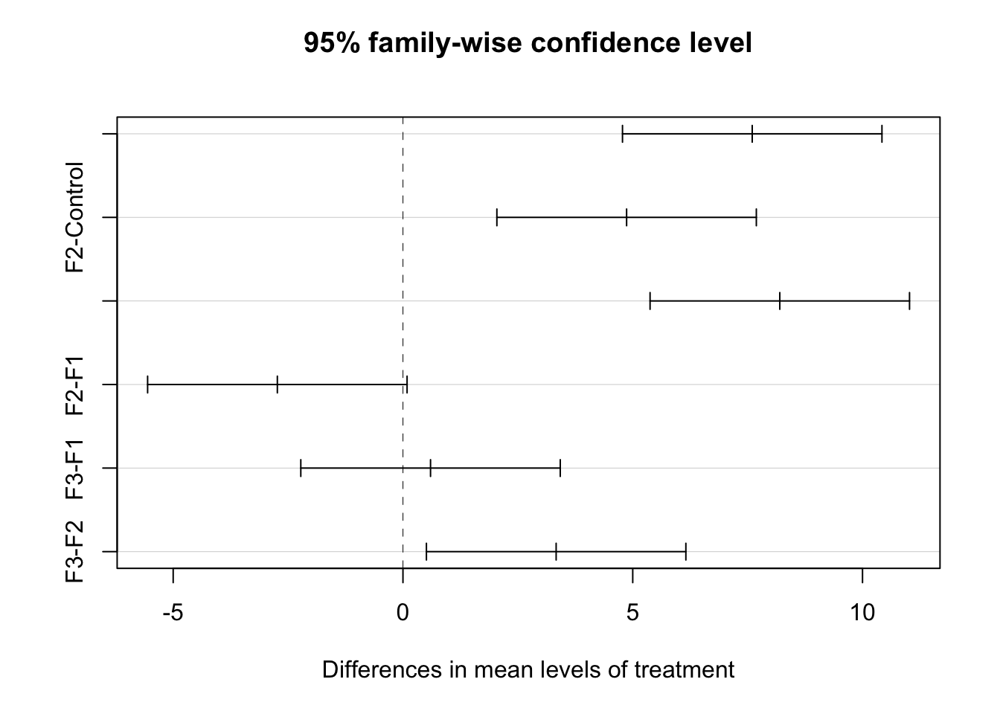
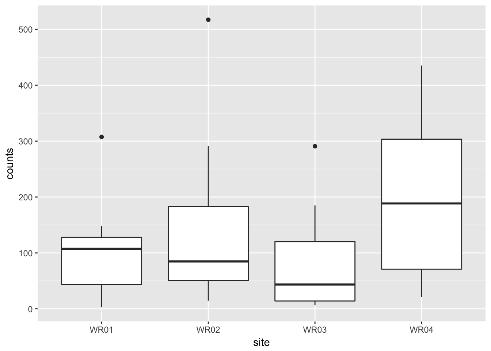
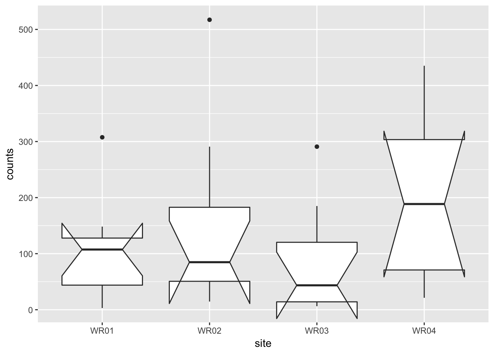
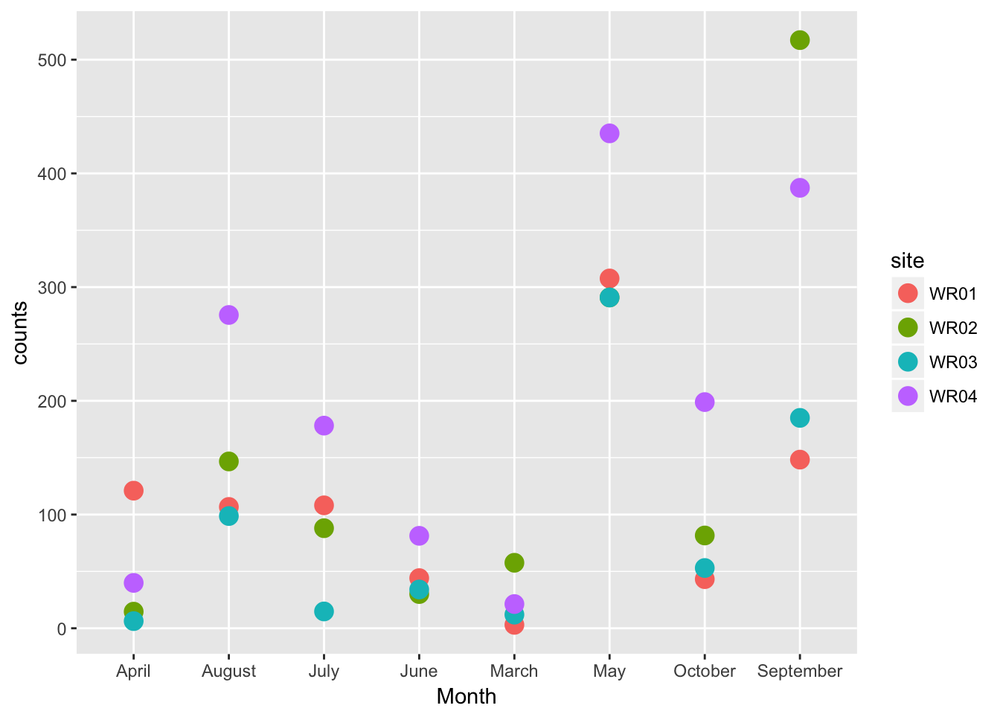
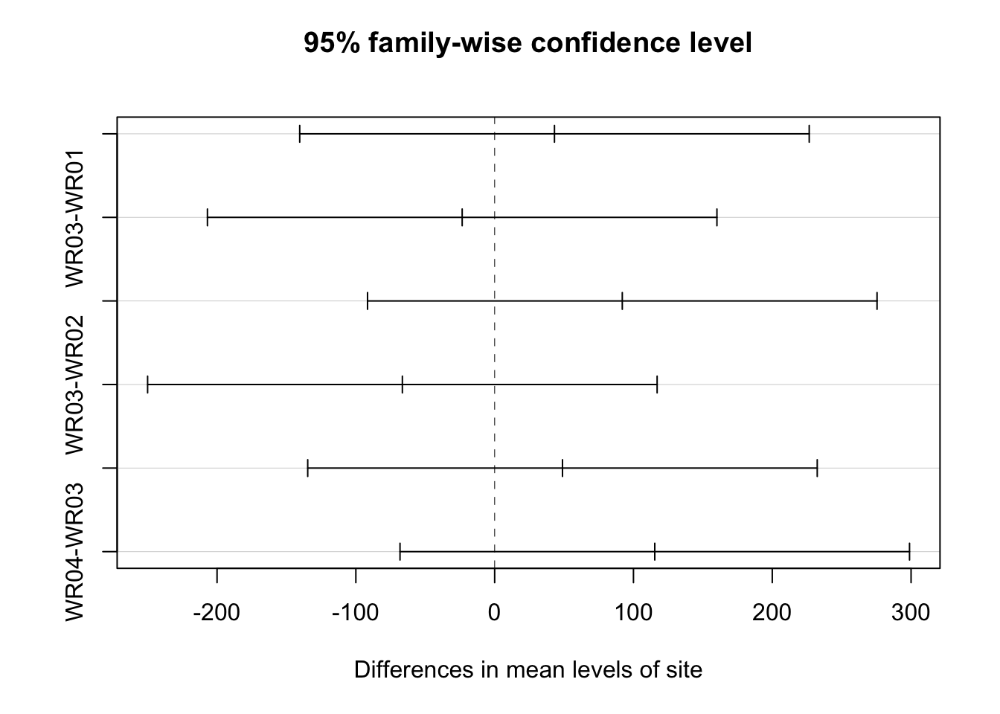
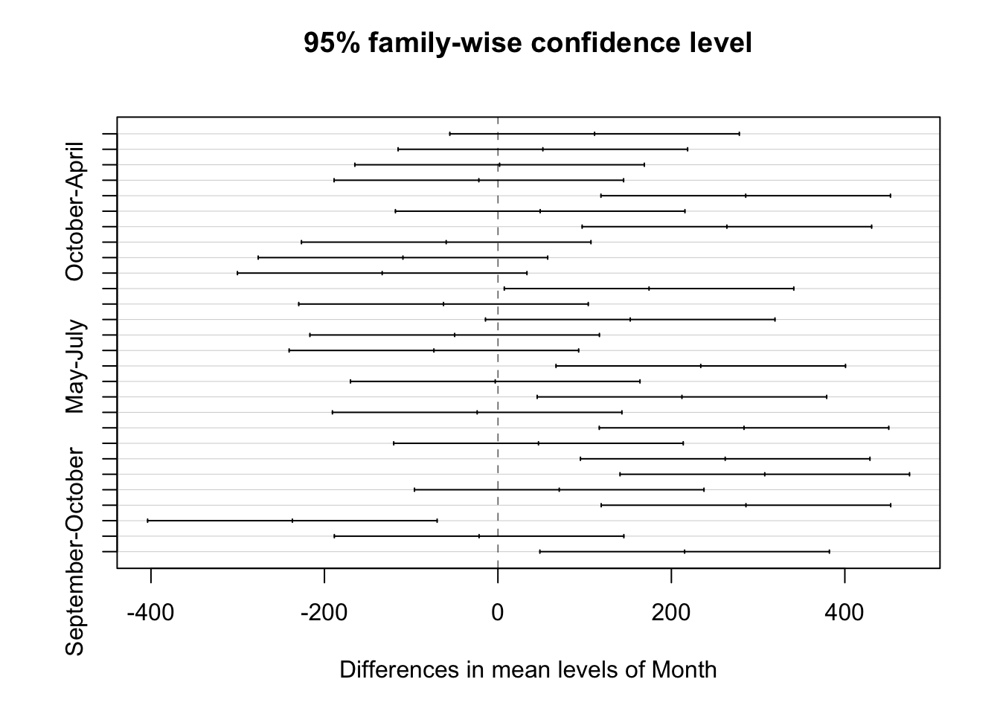
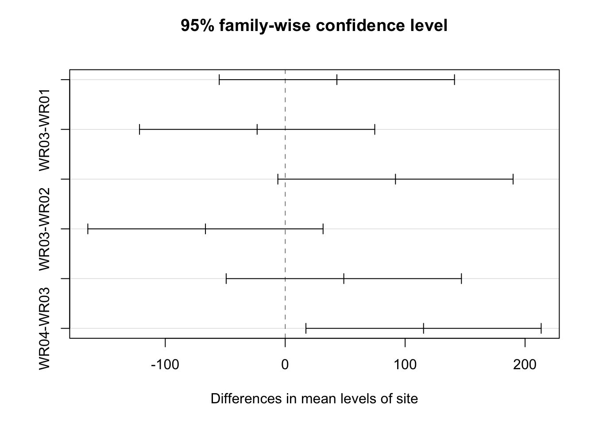

7 Product and Process Comparisons
7.1 Packages used in this chapter
7.2 Exercises
7.2.1 7.2.2. Are the data consistent with the assumed process mean?
7.3 Student’s t-test
7.3.1 “illustrative example of the t-test” in section 7.2.2 - particle (contamination) counts
Over a long run the process average for wafer particle counts has been 50 counts per wafer. We want to test whether a change has occurred based on new data. The null hypothesis that the process mean is 50 counts is tested against the alternative hypothesis that the process mean is not equal to 50 counts.
\[ \begin{aligned} H_0 &: \mu = \mu_0 \\ H_a &: \mu \ne \mu_0 \end{aligned} \]
The purpose of the two-sided alternative is to rule out a possible process change in either direction.
## # A tibble: 10 x 1
## test1
## <dbl>
## 1 50.
## 2 48.
## 3 44.
## 4 56.
## 5 61.
## 6 52.
## 7 53.
## 8 55.
## 9 67.
## 10 51.We can generate the needed summary statistics:
particle_summary <- particles %>%
summarise(particle_mean = mean(test1), particle_sd = sd(test1), particle_count = n())
particle_summary## # A tibble: 1 x 3
## particle_mean particle_sd particle_count
## <dbl> <dbl> <int>
## 1 53.7 6.57 10Let do this simple example by hand and then compare the result to the t.test() function from the stats package
\[ t = \frac {\overline{Y} - \mu_0} {{s~} {\sqrt{n}}} \]
t_particle <- (particle_summary$particle_mean - 50)/(particle_summary$particle_sd/sqrt(particle_summary$particle_count))
t_critical <- qt(1-0.05/2, df = particle_summary$particle_count - 1)
t_critical## [1] 2.262157## [1] 1.781768Becaues the value of t_paticle is inside the interval (-2.26, 2.26), we can not reject the null hypothysis and, therefore, we may continue to assume the process mean is 50 counts.
particle_summary_t <- particles %>%
summarise(particle_mean = mean(test1), particle_sd = sd(test1), particle_count = n(), t_particle = (particle_mean - 50)/(particle_sd/sqrt(particle_count)), t_critical = qt(1-0.05/2, df = particle_count - 1))
particle_summary_t## # A tibble: 1 x 5
## particle_mean particle_sd particle_count t_particle t_critical
## <dbl> <dbl> <int> <dbl> <dbl>
## 1 53.7 6.57 10 1.78 2.26An alternative method would be to use the t.test() function
particle_t_test <- t.test(particles$test1, alternative = "two.sided", mu = 50, conf.level = 0.95)
particle_t_test##
## One Sample t-test
##
## data: particles$test1
## t = 1.7818, df = 9, p-value = 0.1085
## alternative hypothesis: true mean is not equal to 50
## 95 percent confidence interval:
## 49.00243 58.39757
## sample estimates:
## mean of x
## 53.7NEW function alert!
Load the library(magrittr) to use the %$% function. This allows calling column names within the piped function which is useful for working with base R functions
# library(magrittr) # to use the %$% function; allows calling column names within the piped function; useful for working with base R functions
particle_t_test2 <- particles %$%
t.test(test1, alternative = "two.sided", mu = 50, conf.level = 0.95)
particle_t_test2##
## One Sample t-test
##
## data: test1
## t = 1.7818, df = 9, p-value = 0.1085
## alternative hypothesis: true mean is not equal to 50
## 95 percent confidence interval:
## 49.00243 58.39757
## sample estimates:
## mean of x
## 53.77.3.2 Do two processes have the same mean? in section 7.3.1 - Example of unequal number of data points
A new procedure (process 2) to assemble a device is introduced and tested for possible improvement in time of assembly. The question being addressed is whether the mean, μ2, of the new assembly process is smaller than the mean, μ1, for the old assembly process (process 1).
\[ \begin{aligned} H_0 &: \mu_{process \, 2} = \mu_{process \, 1} \\ H_a &: \mu_{process \, 2} < \mu_{process \, 1} \end{aligned} \]
device_test <- tribble(
~device, ~process_old, ~process_new,
1, 32, 36,
2, 37, 31,
3, 35, 30,
4, 28, 31,
5, 41, 34,
6, 44, 36,
7, 35, 29,
8, 31, 32,
9, 34, 31,
10, 38, NA,
11, 42, NA)
device_test## # A tibble: 11 x 3
## device process_old process_new
## <dbl> <dbl> <dbl>
## 1 1. 32. 36.
## 2 2. 37. 31.
## 3 3. 35. 30.
## 4 4. 28. 31.
## 5 5. 41. 34.
## 6 6. 44. 36.
## 7 7. 35. 29.
## 8 8. 31. 32.
## 9 9. 34. 31.
## 10 10. 38. NA
## 11 11. 42. NAdevice_summary <- device_test %>%
dplyr::select(process_old, process_new) %>%
summary()
device_summary## process_old process_new
## Min. :28.00 Min. :29.00
## 1st Qu.:33.00 1st Qu.:31.00
## Median :35.00 Median :31.00
## Mean :36.09 Mean :32.22
## 3rd Qu.:39.50 3rd Qu.:34.00
## Max. :44.00 Max. :36.00
## NA's :2device_t_test <- device_test %$%
t.test(process_new, process_old, alternative = "less", var.equal = FALSE, conf.level = 0.95)
device_t_test##
## Welch Two Sample t-test
##
## data: process_new and process_old
## t = -2.2694, df = 15.533, p-value = 0.01894
## alternative hypothesis: true difference in means is less than 0
## 95 percent confidence interval:
## -Inf -0.8869087
## sample estimates:
## mean of x mean of y
## 32.22222 36.09091## [1] -1.7491097.4 One more classic example! (from Student himself)
From the article
I will conclude with an example which comes beyond the range of the tables, there being eleven experiments.
To test whether it is of advantage to kiln-dry barley seed before sowing, seven varieties of barley wore sown (both kiln-dried and not kiln-dried in 1899 and four in 1900; the results are given in the table.
corn <- read_table2("sample reg kiln
1 1903 2009
2 1935 1915
3 1910 2011
4 2496 2463
5 2108 2180
6 1961 1925
7 2060 2122
8 1444 1482
9 1612 1542
10 1316 1443
11 1511 1535", col_names = TRUE, col_types = cols("i", "d", "d"))
corn %<>% mutate(year = case_when(
sample <= 7 ~ "cy1889",
sample > 7 ~ "cy1900"
))
corn## # A tibble: 11 x 4
## sample reg kiln year
## <int> <dbl> <dbl> <chr>
## 1 1 1903. 2009. cy1889
## 2 2 1935. 1915. cy1889
## 3 3 1910. 2011. cy1889
## 4 4 2496. 2463. cy1889
## 5 5 2108. 2180. cy1889
## 6 6 1961. 1925. cy1889
## 7 7 2060. 2122. cy1889
## 8 8 1444. 1482. cy1900
## 9 9 1612. 1542. cy1900
## 10 10 1316. 1443. cy1900
## 11 11 1511. 1535. cy1900corn_t_test_wrong <- corn %$%
t.test(reg, kiln, alternative = "two.sided", var.equal = TRUE, conf.level = 0.95)
corn_t_test_wrong##
## Two Sample t-test
##
## data: reg and kiln
## t = -0.23413, df = 20, p-value = 0.8173
## alternative hypothesis: true difference in means is not equal to 0
## 95 percent confidence interval:
## -334.2127 266.7581
## sample estimates:
## mean of x mean of y
## 1841.455 1875.182corn_t_test_correct <- corn %$%
t.test(reg, kiln, paired = TRUE, alternative = "two.sided", var.equal = TRUE, conf.level = 0.95)
corn_t_test_correct##
## Paired t-test
##
## data: reg and kiln
## t = -1.6905, df = 10, p-value = 0.1218
## alternative hypothesis: true difference in means is not equal to 0
## 95 percent confidence interval:
## -78.18164 10.72710
## sample estimates:
## mean of the differences
## -33.727277.4.1 plot of Student’s (W.S. Gossett) data
## # A tibble: 22 x 4
## sample year treatment yield
## <int> <chr> <chr> <dbl>
## 1 1 cy1889 reg 1903.
## 2 2 cy1889 reg 1935.
## 3 3 cy1889 reg 1910.
## 4 4 cy1889 reg 2496.
## 5 5 cy1889 reg 2108.
## 6 6 cy1889 reg 1961.
## 7 7 cy1889 reg 2060.
## 8 8 cy1900 reg 1444.
## 9 9 cy1900 reg 1612.
## 10 10 cy1900 reg 1316.
## # ... with 12 more rowsggplot(corn) +
geom_point(aes(reg, kiln, colour = year)) +
geom_smooth(aes(reg, kiln), method = "lm")
ggplot(corn_tidy, aes(treatment, yield)) +
geom_boxplot(aes(fill = treatment)) +
geom_line(aes(group = sample), linetype = "dashed", colour = "grey80") +
geom_point() +
theme_classic() +
labs(title = "Analysis of yield by seed type shows slight increase for the kiln dried treatement",
subtitle = "paired t-test shows no signifcant difference at the 0.95 confidence intervlal",
y = "pounds head corn per acre shillings per quarter", caption = "from: THE PROBABLE ERROR OF A MEAN
By STUDENT (https://www.york.ac.uk/depts/maths/histstat/student.pdf)")
7.5 Anova
From the NIST Engineering and Statistics Handbook
ANOVA is a general technique that can be used to test the hypothesis that the means among two or more groups are equal, under the assumption that the sampled populations are normally distributed.
The ANOVA procedure is one of the most powerful statistical techniques
The following example is adapted from https://onlinecourses.science.psu.edu/stat502/node/150
a plant biologist thinks that plant height may be affected by applying different fertilizers. They tested three kinds of fertilizer and also one group of plants that are untreated (the control). They kept all the plants under controlled conditions in the greenhouse. (In addition, we need to have some information about replication and randomization.) They randomly assigned the fertilizer treatment levels to individual containerized plants to produce 6 replications of each of the fertilizer applications.
lesson1_data <- read_table2("Control F1 F2 F3
21 32 22.5 28
19.5 30.5 26 27.5
22.5 25 28 31
21.5 27.5 27 29.5
20.5 28 26.5 30
21 28.6 25.2 29.2", col_names = TRUE)
lesson1_data## # A tibble: 6 x 4
## Control F1 F2 F3
## <dbl> <dbl> <dbl> <dbl>
## 1 21.0 32.0 22.5 28.0
## 2 19.5 30.5 26.0 27.5
## 3 22.5 25.0 28.0 31.0
## 4 21.5 27.5 27.0 29.5
## 5 20.5 28.0 26.5 30.0
## 6 21.0 28.6 25.2 29.2One-way ANOVA table: the basic format
| Source of Variation | Sum of Squares (SS) | Degrees of Feedom (df) | Mean Squares (MS) | F-Ratio |
|---|---|---|---|---|
| Between samples | SSB | k - 1 | MSB | MSB/MSW |
| Within samples | SSW | n(total) - k | MSW | |
| Total | SST | n(total) - 1 |
One-way ANOVA table: NIST Handbook
| Source | SS | DF | MS | F |
|---|---|---|---|---|
| Treatments | SST | k−1 | SST/(k−1) | MST/MSE |
| Error | SSE | N−k | SSE/(N−k) | |
| Total (corrected) | SS | N−1 |
\[ \textbf{Total Sum of Squares} \\ ~ \\ SST = \sum_{i=1}^k \sum_{j=1}^{n_i} \left ( x_{ij} - \overline{\overline{x}} \right )^2 \]
7.5.1 Tidy the data and compute the sum of squares
lesson1_gather <- lesson1_data %>%
gather(key = treatment, value = value, Control, F1, F2, F3)
lesson1_gather## # A tibble: 24 x 2
## treatment value
## <chr> <dbl>
## 1 Control 21.0
## 2 Control 19.5
## 3 Control 22.5
## 4 Control 21.5
## 5 Control 20.5
## 6 Control 21.0
## 7 F1 32.0
## 8 F1 30.5
## 9 F1 25.0
## 10 F1 27.5
## # ... with 14 more rows## [1] 26.16667## [1] 312.4733
One-way ANOVA table: Lesson1 Example
| Source of Variation | Sum of Squares (SS) | Degrees of Feedom (df) | Mean Squares (MS) | F-Ratio |
|---|---|---|---|---|
| Between samples | SSB | k - 1 | MSB | MSB/MSW |
| Within samples | SSW | n(total) - k | MSW | |
| Total | SST = 312.43 | n(total) - 1 = 23 |
\[ \textbf{Total Sum of Squares} \\ ~ \\ SST = \sum_{i=1}^k \sum_{j=1}^{n_i} \left ( x_{ij} - \overline{\overline{x}} \right )^2 \]
\[ \textbf{Sum of Squares Between} \\ ~ \\ SSB = \sum_{i = 1}^k{n_i \left (\overline{x}_i - \overline{\overline{x}} \right )^2} \]
\[ \textbf{Sum of Squares Within} \\ ~ \\ SSW = SST - SSB \\ or \\ SSW = \sum_{i=1}^k \sum_{j=1}^{n_i} \left ( x_{ij} - \overline{x_i} \right)^2 \]
summary_within_groups <- lesson1_gather %>%
group_by(treatment) %>%
summarise(N = n(), mean = mean(value)) # SS = (sum( (value - mean(value))^2
summary_within_groups## # A tibble: 4 x 3
## treatment N mean
## <chr> <int> <dbl>
## 1 Control 6 21.0
## 2 F1 6 28.6
## 3 F2 6 25.9
## 4 F3 6 29.2lesson1_SSB <- summary_within_groups %$%
sum((mean - lesson1_grand_mean)^2)*6
message(cat("SSB ", lesson1_SSB))## SSB 251.44## ## SSW 61.03333## One-way ANOVA table: Lesson1 Example
| Source of Variation | Sum of Squares (SS) | Degrees of Feedom (df) | Mean Squares (MS) | F-Ratio |
|---|---|---|---|---|
| Between samples | SSB = 251.44 | k - 1 = 3 | 83.81 | MSB/MSW |
| Within samples | SSW = 61.03 | n(total) - k = 20 | 3.05 | |
| Total | SST = 312.43 | n(total) - 1 = 23 |
\[ \frac {MSB} {BSW} = \frac {83.81} {3.05} = 27.47 \]
Calculate the critical F-statistic (or look it up in a table)
## [1] 3.098391Wtih 27.47 > 3.1 we can regect the null hypothesis.
7.6 Let’s let R do the work:
## Df Sum Sq Mean Sq F value Pr(>F)
## treatment 3 251.44 83.81 27.46 2.71e-07 ***
## Residuals 20 61.03 3.05
## ---
## Signif. codes: 0 '***' 0.001 '**' 0.01 '*' 0.05 '.' 0.1 ' ' 17.7 Which populations have different means?
7.7.1 Tukey (or Tukey-Kramer) test
For the example above, we would have constructed the following hypothesis:
\[ \begin{aligned} H_0 &: \mu_{control} = \mu_{F1} = \mu_{F2} = \mu_{F3} \\ H_a &: \text{At least two population means are different.} \end{aligned} \]
The ANOVA analysis above only tells us that there is a difference between two or more of the population means.
We could do a pairwise comparison using confidence intervals for each mean; however, this method does not use the entire population variance.
The Tukey-Kramer proceedure for multiple comparisons is one method to compare two or more groups
## Tukey multiple comparisons of means
## 95% family-wise confidence level
##
## Fit: aov(formula = value ~ treatment, data = lesson1_gather)
##
## $treatment
## diff lwr upr p adj
## F1-Control 7.600000 4.7770648 10.42293521 0.0000016
## F2-Control 4.866667 2.0437315 7.68960188 0.0005509
## F3-Control 8.200000 5.3770648 11.02293521 0.0000005
## F2-F1 -2.733333 -5.5562685 0.08960188 0.0598655
## F3-F1 0.600000 -2.2229352 3.42293521 0.9324380
## F3-F2 3.333333 0.5103981 6.15626854 0.0171033## term comparison estimate conf.low conf.high adj.p.value
## 1 treatment F1-Control 7.600000 4.7770648 10.42293521 1.637988e-06
## 2 treatment F2-Control 4.866667 2.0437315 7.68960188 5.509424e-04
## 3 treatment F3-Control 8.200000 5.3770648 11.02293521 5.148374e-07
## 4 treatment F2-F1 -2.733333 -5.5562685 0.08960188 5.986551e-02
## 5 treatment F3-F1 0.600000 -2.2229352 3.42293521 9.324380e-01
## 6 treatment F3-F2 3.333333 0.5103981 6.15626854 1.710330e-02
F3-F2 : a and b
F3-F1 : a
F2-F1 : b
F3-control : c
F2-control : c
F1-control : c
summary_lesson1 <- lesson1_gather %>%
group_by(treatment) %>%
summarise(N = n(), mean = mean(value), sd = sd(value),
se = sd/sqrt(N), ci = se*qt(0.975,N-1)) %>%
mutate(labels = c("c", "ab", "b", "a"))
summary_lesson1## # A tibble: 4 x 7
## treatment N mean sd se ci labels
## <chr> <int> <dbl> <dbl> <dbl> <dbl> <chr>
## 1 Control 6 21.0 1.00 0.408 1.05 c
## 2 F1 6 28.6 2.44 0.995 2.56 ab
## 3 F2 6 25.9 1.90 0.775 1.99 b
## 4 F3 6 29.2 1.29 0.526 1.35 aShouldn’t R be able to do this work for us?
## Loading required package: mvtnorm## Loading required package: survival## Loading required package: TH.data## Loading required package: MASS##
## Attaching package: 'MASS'## The following object is masked from 'package:dplyr':
##
## select##
## Attaching package: 'TH.data'## The following object is masked from 'package:MASS':
##
## geyserlibrary(multcompView)
greenhouse_letters <- multcompLetters4(lesson1_aov, lesson1_Tukey)
greenhouse_letters## $treatment
## F3 F1 F2 Control
## "a" "ab" "b" "c"## List of 1
## $ treatment:List of 3
## ..$ Letters : Named chr [1:4] "a" "ab" "b" "c"
## .. ..- attr(*, "names")= chr [1:4] "F3" "F1" "F2" "Control"
## ..$ monospacedLetters: Named chr [1:4] "a " "ab " " b " " c"
## .. ..- attr(*, "names")= chr [1:4] "F3" "F1" "F2" "Control"
## ..$ LetterMatrix : logi [1:4, 1:3] TRUE TRUE FALSE FALSE FALSE TRUE ...
## .. ..- attr(*, "dimnames")=List of 2
## .. .. ..$ : chr [1:4] "F3" "F1" "F2" "Control"
## .. .. ..$ : chr [1:3] "a" "b" "c"
## ..- attr(*, "class")= chr "multcompLetters"## List of 3
## $ Letters : Named chr [1:4] "a" "ab" "b" "c"
## ..- attr(*, "names")= chr [1:4] "F3" "F1" "F2" "Control"
## $ monospacedLetters: Named chr [1:4] "a " "ab " " b " " c"
## ..- attr(*, "names")= chr [1:4] "F3" "F1" "F2" "Control"
## $ LetterMatrix : logi [1:4, 1:3] TRUE TRUE FALSE FALSE FALSE TRUE ...
## ..- attr(*, "dimnames")=List of 2
## .. ..$ : chr [1:4] "F3" "F1" "F2" "Control"
## .. ..$ : chr [1:3] "a" "b" "c"View(as_tibble(gh_letters_flatten$Letters))
gh_letters_pluck <- greenhouse_letters %>%
pluck(1)
str(gh_letters_pluck)## List of 3
## $ Letters : Named chr [1:4] "a" "ab" "b" "c"
## ..- attr(*, "names")= chr [1:4] "F3" "F1" "F2" "Control"
## $ monospacedLetters: Named chr [1:4] "a " "ab " " b " " c"
## ..- attr(*, "names")= chr [1:4] "F3" "F1" "F2" "Control"
## $ LetterMatrix : logi [1:4, 1:3] TRUE TRUE FALSE FALSE FALSE TRUE ...
## ..- attr(*, "dimnames")=List of 2
## .. ..$ : chr [1:4] "F3" "F1" "F2" "Control"
## .. ..$ : chr [1:3] "a" "b" "c"
## - attr(*, "class")= chr "multcompLetters"## # A tibble: 20 x 1
## value
## * <chr>
## 1 a
## 2 ab
## 3 b
## 4 c
## 5 "a "
## 6 "ab "
## 7 " b "
## 8 " c"
## 9 TRUE
## 10 TRUE
## 11 FALSE
## 12 FALSE
## 13 FALSE
## 14 TRUE
## 15 TRUE
## 16 FALSE
## 17 FALSE
## 18 FALSE
## 19 FALSE
## 20 TRUE## Classes 'tbl_df', 'tbl' and 'data.frame': 20 obs. of 1 variable:
## $ value: chr "a" "ab" "b" "c" ...## # A tibble: 4 x 1
## value
## * <chr>
## 1 a
## 2 ab
## 3 b
## 4 cletters_final <- as_tibble(names(greenhouse_letters$treatment[["Letters"]]))
letters_final %<>% rename(treatement = value)
letters_final## # A tibble: 4 x 1
## treatement
## <chr>
## 1 F3
## 2 F1
## 3 F2
## 4 Control## # A tibble: 4 x 2
## treatement value
## <chr> <chr>
## 1 F3 a
## 2 F1 ab
## 3 F2 b
## 4 Control c7.8 ANOVA Block analysis
ecoli <- read_table2("Month WR01 WR02 WR03 WR04
March 3. 57.6 12 21.3
April 121. 14.6 6.3 39.9
May 307.6 290.9 290.9 435.2
June 44.1 30.1 34.1 81.3
July 108.1 88 14.8 178.2
August 106.70 146.70 98.70 275.50
September 148.30 517.20 185.00 387.30
October 43.2 81.6 53 198.9", col_names = TRUE)
ecoli## # A tibble: 8 x 5
## Month WR01 WR02 WR03 WR04
## <chr> <dbl> <dbl> <dbl> <dbl>
## 1 March 3.00 57.6 12.0 21.3
## 2 April 121. 14.6 6.30 39.9
## 3 May 308. 291. 291. 435.
## 4 June 44.1 30.1 34.1 81.3
## 5 July 108. 88.0 14.8 178.
## 6 August 107. 147. 98.7 276.
## 7 September 148. 517. 185. 387.
## 8 October 43.2 81.6 53.0 199.7.8.1 Tidy up the data
## # A tibble: 32 x 3
## Month site counts
## <chr> <chr> <dbl>
## 1 March WR01 3.00
## 2 April WR01 121.
## 3 May WR01 308.
## 4 June WR01 44.1
## 5 July WR01 108.
## 6 August WR01 107.
## 7 September WR01 148.
## 8 October WR01 43.2
## 9 March WR02 57.6
## 10 April WR02 14.6
## # ... with 22 more rows7.8.2 One-way ANOVA
## Df Sum Sq Mean Sq F value Pr(>F)
## site 3 61945 20648 1.142 0.349
## Residuals 28 506096 180757.8.3 Plot of the data

## notch went outside hinges. Try setting notch=FALSE.
## notch went outside hinges. Try setting notch=FALSE.
## notch went outside hinges. Try setting notch=FALSE.
## notch went outside hinges. Try setting notch=FALSE.


7.8.4 ANOVA with blocking factor
## Df Sum Sq Mean Sq F value Pr(>F)
## Month 7 402112 57445 11.60 5.7e-06 ***
## site 3 61945 20648 4.17 0.0183 *
## Residuals 21 103984 4952
## ---
## Signif. codes: 0 '***' 0.001 '**' 0.01 '*' 0.05 '.' 0.1 ' ' 17.8.5 But what is different?
## Tukey multiple comparisons of means
## 95% family-wise confidence level
##
## Fit: aov(formula = counts ~ Month + site, data = ecoli_tidy)
##
## $Month
## diff lwr upr p adj
## August-April 111.450 -55.443795 278.34379 0.3691183
## July-April 51.825 -115.068795 218.71879 0.9620137
## June-April 1.950 -164.943795 168.84379 1.0000000
## March-April -21.975 -188.868795 144.91879 0.9997950
## May-April 285.700 118.806205 452.59379 0.0002417
## October-April 48.725 -118.168795 215.61879 0.9726099
## September-April 264.000 97.106205 430.89379 0.0006458
## July-August -59.625 -226.518795 107.26879 0.9235806
## June-August -109.500 -276.393795 57.39379 0.3899013
## March-August -133.425 -300.318795 33.46879 0.1827645
## May-August 174.250 7.356205 341.14379 0.0366874
## October-August -62.725 -229.618795 104.16879 0.9032585
## September-August 152.550 -14.343795 319.44379 0.0894265
## June-July -49.875 -216.768795 117.01879 0.9689635
## March-July -73.800 -240.693795 93.09379 0.8076556
## May-July 233.875 66.981205 400.76879 0.0025586
## October-July -3.100 -169.993795 163.79379 1.0000000
## September-July 212.175 45.281205 379.06879 0.0068760
## March-June -23.925 -190.818795 142.96879 0.9996407
## May-June 283.750 116.856205 450.64379 0.0002639
## October-June 46.775 -120.118795 213.66879 0.9780722
## September-June 262.050 95.156205 428.94379 0.0007058
## May-March 307.675 140.781205 474.56879 0.0000907
## October-March 70.700 -96.193795 237.59379 0.8378113
## September-March 285.975 119.081205 452.86879 0.0002388
## October-May -236.975 -403.868795 -70.08121 0.0022204
## September-May -21.700 -188.593795 145.19379 0.9998114
## September-October 215.275 48.381205 382.16879 0.0059746
##
## $site
## diff lwr upr p adj
## WR02-WR01 43.0875 -54.981447 141.15645 0.6186609
## WR03-WR01 -23.4000 -121.468947 74.66895 0.9090016
## WR04-WR01 91.9500 -6.118947 190.01895 0.0712136
## WR03-WR02 -66.4875 -164.556447 31.58145 0.2623702
## WR04-WR02 48.8625 -49.206447 146.93145 0.5197897
## WR04-WR03 115.3500 17.281053 213.41895 0.0174029## $Month
## May September August July October June April
## "a" "ab" "bc" "c" "c" "c" "c"
## March
## "c"
##
## $site
## WR04 WR02 WR01 WR03
## "a" "ab" "ab" "b"
7.9 Two-way ANOVA with interaction
lab_data_2way_anova <- read_table2("46.5 138.4 180.9 39.8 132.4 176.8
47.3 144.4 180.5 40.3 132.4 173.6
46.9 142.7 183 41.2 130.3 174.9", col_names = FALSE)
lab_data_2way_anova## # A tibble: 3 x 6
## X1 X2 X3 X4 X5 X6
## <dbl> <dbl> <dbl> <dbl> <dbl> <dbl>
## 1 46.5 138. 181. 39.8 132. 177.
## 2 47.3 144. 180. 40.3 132. 174.
## 3 46.9 143. 183. 41.2 130. 175.# I want to stack X1-X3 on top of X4-X6
library(dplyr)
lab_data_method1 <- lab_data_2way_anova %>%
dplyr::select(X1:X3) %>%
rename(dose1 = X1, dose2 = X2, dose3 = X3) %>%
mutate(method = "method1")
lab_data_method1## # A tibble: 3 x 4
## dose1 dose2 dose3 method
## <dbl> <dbl> <dbl> <chr>
## 1 46.5 138. 181. method1
## 2 47.3 144. 180. method1
## 3 46.9 143. 183. method1lab_data_method2 <- lab_data_2way_anova %>%
dplyr::select(X4:X6) %>%
rename(dose1 = X4, dose2 = X5, dose3 = X6) %>%
mutate(method = "method2")
lab_data_method2## # A tibble: 3 x 4
## dose1 dose2 dose3 method
## <dbl> <dbl> <dbl> <chr>
## 1 39.8 132. 177. method2
## 2 40.3 132. 174. method2
## 3 41.2 130. 175. method2## # A tibble: 6 x 4
## dose1 dose2 dose3 method
## <dbl> <dbl> <dbl> <chr>
## 1 46.5 138. 181. method1
## 2 47.3 144. 180. method1
## 3 46.9 143. 183. method1
## 4 39.8 132. 177. method2
## 5 40.3 132. 174. method2
## 6 41.2 130. 175. method2lab_data_tidy <- lab_data_stack %>%
gather(key = doping_level, value = conc, dose1, dose2, dose3)
lab_data_tidy## # A tibble: 18 x 3
## method doping_level conc
## <chr> <chr> <dbl>
## 1 method1 dose1 46.5
## 2 method1 dose1 47.3
## 3 method1 dose1 46.9
## 4 method2 dose1 39.8
## 5 method2 dose1 40.3
## 6 method2 dose1 41.2
## 7 method1 dose2 138.
## 8 method1 dose2 144.
## 9 method1 dose2 143.
## 10 method2 dose2 132.
## 11 method2 dose2 132.
## 12 method2 dose2 130.
## 13 method1 dose3 181.
## 14 method1 dose3 180.
## 15 method1 dose3 183.
## 16 method2 dose3 177.
## 17 method2 dose3 174.
## 18 method2 dose3 175.View(lab_data_tidy)
# run the anova
lab_data_aov <- aov(conc ~ method + doping_level, lab_data_tidy)
summary(lab_data_aov)## Df Sum Sq Mean Sq F value Pr(>F)
## method 1 264 264 80.27 3.58e-07 ***
## doping_level 2 57026 28513 8677.63 < 2e-16 ***
## Residuals 14 46 3
## ---
## Signif. codes: 0 '***' 0.001 '**' 0.01 '*' 0.05 '.' 0.1 ' ' 1## Df Sum Sq Mean Sq F value Pr(>F)
## method 1 264 264 98.347 3.92e-07 ***
## doping_level 2 57026 28513 10632.526 < 2e-16 ***
## method:doping_level 2 14 7 2.577 0.117
## Residuals 12 32 3
## ---
## Signif. codes: 0 '***' 0.001 '**' 0.01 '*' 0.05 '.' 0.1 ' ' 1